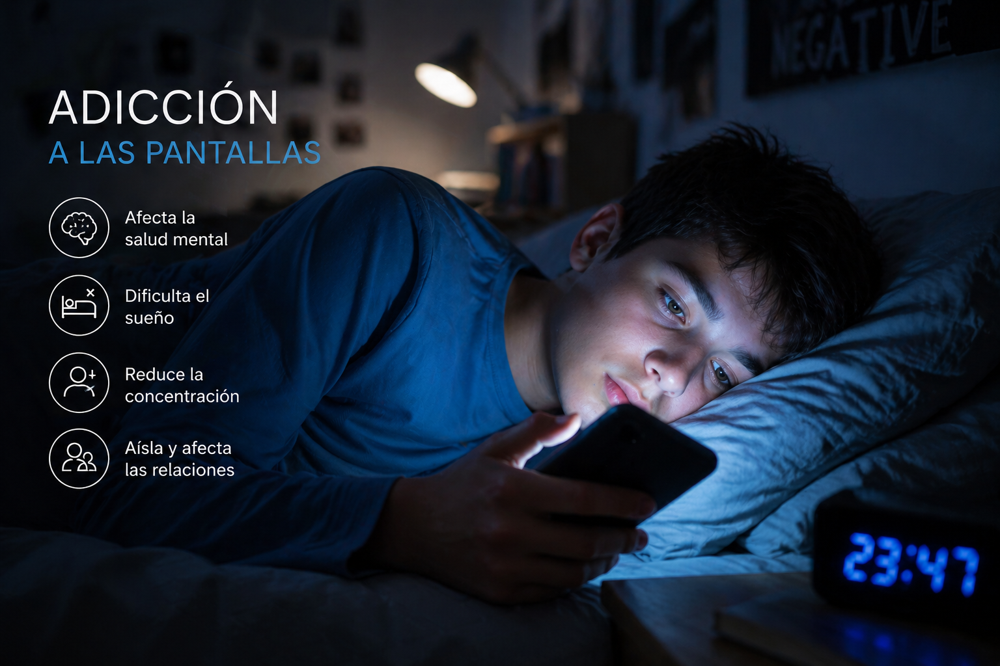

Al estar constantemente frente a una pantalla no solo puede tener efectos adversos sobre la salud mental, sino también física. Se ha demostrado que puede provocar obesidad, dolor de cuello y espalda, irritación ocular o problemas para dormir.
La adicción a las pantallas se ha catalogado como un trastorno de comportamiento que genera dependencia hacia alguna actividad relacionada con dispositivos como juegos en línea o redes sociales. Este tipo de trastornos hacen perder la noción del tiempo, generan malestar, baja autoestima, irritabilidad, insomnio y aislamiento social, además, estudios científicos han encontrado una relación directa entre el aumento de la depresión y el uso de las redes sociales.
Para mantener una actitud sana en la red es recomendable seguir los siguientes consejos:
• Designar un período de tiempo para desconectar de los dispositivos.
• Realizar actividades que no impliquen pantallas.
• Dejar de usar pantallas una hora antes de ir a dormir.
• No tener pantallas en tu habitación.
• No usar filtros en redes sociales.
• Disfrutar de experiencias sin llevar ningún dispositivo.